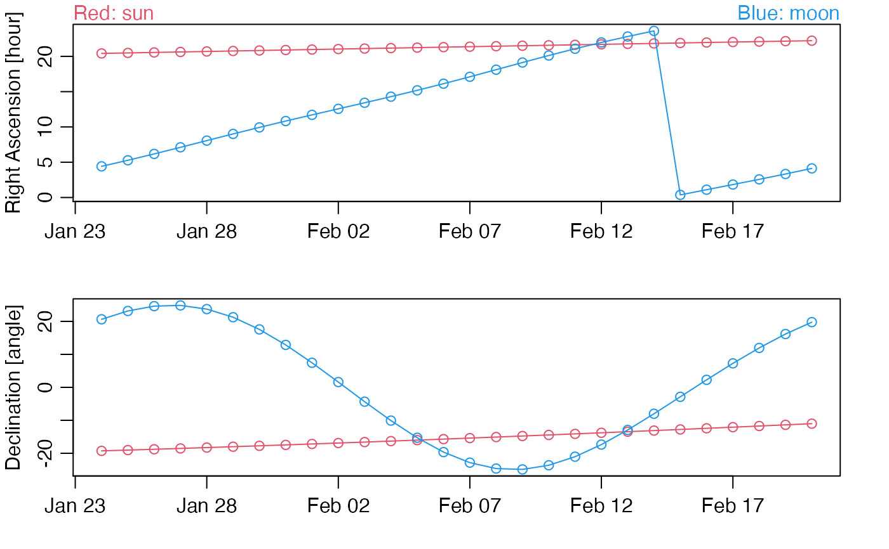

ephemeris.RdThis function infers ephemeris data by querying a website (reference 1), and so it requires a web connection to work. It is aimed at people who already know the ideas and terminology of ephemeris computations.
ephemeris( name = "p:Sun", longitude = 0, latitude = 0, t0 = Sys.Date(), nbd = 5, step = 1, theory = "INPOP", teph = 1, tcoor = 1, rplane = 1, debug = FALSE )
| name | character value of object in question. There are many objects
that can be checked, e.g. |
|---|---|
| longitude | decimal value of the longitude. Default: 0. |
| latitude | decimal value of the latitude. Default: 0. |
| t0 | POSIXct time (UTC) for the first retrieval, or a string from which
|
| nbd | integer value of the number of times to be retrieved. Default: 5. |
| step | numeric value for the time increment, in days. Default: 1. |
| theory | character value indicating the planetary theory, with choices
|
| teph | integer value for the type of ephemeris, with 1 for astrometric J2000, 2 for apparent of the date, 3 for mean of the date, or 4 for mean J2000. Default: 1. |
| tcoor | integer value for the type of coordinate, with 1 for spherical, 2 for rectangular, 3 for local, 4 for hour angle, and 5 dedicated to observation. Default: 1. |
| rplane | integer value for the reference plane, with 1 for equator and 2 for ecliptic. Default: 1. |
| debug | logical value indicating whether to perform some
extra checks, and report on progress. Default: |
ephemeris returns a data frame with columns that depend
on the particular call. The default call has columns named
Date, RA, DEC, Dobs, VMag, dRAcosDEC,
dDEC, RV, RAdec, DECdec, which are shortened
versions of the names returned by the query, along with
extra olumns named time (which is Date as a POSIXct time object),
RAdec (decimal version of RA) and DECdec (decimal version of
DEC). Other calls will have different results.
The names of parameters, and their explanations, are patterned
on Reference 1. It is not easy to guess these things. For example,
the moon is "s:Moon" (where the s indicates a satellite)
a planet).
Apart from the listed parameters of this function, the other specifications for
the query are set up in the same way as is used in the query-generation examples
provided in Reference 1.
For example, the 'observer' is set to @500, designating the centre of the earth.
Users who are curious about the query should specify debug=TRUE when calling
this function, and they are encouraged to contact the package author, if
they would like any of these hard-wired defaults to be transformed
into a user-adjustable value, via the creation of new parameters
to this function.
The names of parameters, and their explanations, are patterned
on Reference 1. It is not easy to guess these things. For example,
the moon is "s:Moon" (where the s indicates a satellite)
a planet).
Apart from the listed parameters of this function, the other specifications for
the query are set up in the same way as is used in the query-generation examples
provided in Reference 1.
For example, the 'observer' is set to @500, designating the centre of the earth.
The Institut de mécanique céleste et de calcul des éphémérides website
https://ssp.imcce.fr/webservices/miriade/api/ephemcc/ is the source of
data returned by ephemeris.
The In The Sky website used for tests demonstrating 1 arc-second consistency for sun RA and DEC, and 15 arc-second consistency for moon: https://in-the-sky.org/ephemeris.php
Dan Kelley
# Plot daily Right Ascension and Declination values over a 28-day period. library(ephemeris) s <- ephemeris("p:Sun", nbd=28) m <- ephemeris("s:Moon", nbd=28) par(mfrow=c(2, 1), mar=c(3,3,1,2), mgp=c(2,0.7,0)) RAlim <- range(c(s$RAdec, m$RAdec)) plot(s$time, s$RAdec, type="o", xlab="", ylab="Right Ascension [hour]", col=2, ylim=RAlim) lines(m$time, m$RAdec, col=4, type="o") mtext("Red: sun", col=2, adj=0) mtext("Blue: moon", col=4, adj=1) DEClim <- range(c(s$DECdec, m$DECdec)) plot(s$time, s$DECdec, type="o", xlab="", ylab="Declination [angle]", col=2, ylim=DEClim)